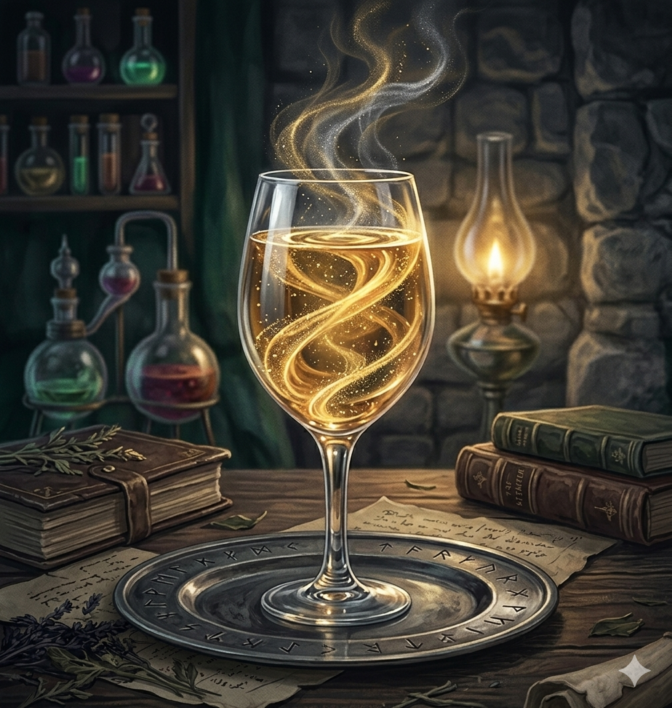

Sorte Líquida (Felix Felicis)
O Elixir do Sucesso
Uma releitura gastronômica e segura da lendária poção. A versão de Magnus Riddle captura a essência da Sorte Líquida sem os efeitos colaterais da superdosagem. Com base em champanhe cristalino e mel de flores raras, esta infusão utiliza partículas de glitter comestível que giram perpetuamente, simulando o brilho inconfundível da Felix Felicis.

Componentes do Elixir
- 1 garrafa de Champanhe Cristalino
- • 50ml de Mel de Flores Raras das Montanhas
- • Partículas de Ouro Comestível (Glitter)
- • 1 dose de Água Gaseificada Mágica
- • Essência de Raiz de Arruda Espiritual (sutil)
A Grande Obra Alquímica
1. Em uma taça de cristal purificada, misture o mel e a essência de arruda.
2. Adicione as partículas de ouro comestível e gire o caldeirão (taça) três vezes no sentido anti-horário.
3. Complete com o champanhe cristalino bem gelado.
4. Finalize com a água gaseificada para ativar a efervescência e o movimento perpétuo do ouro."